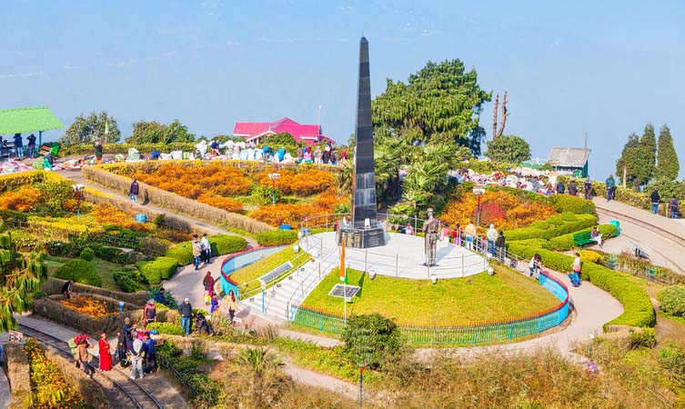
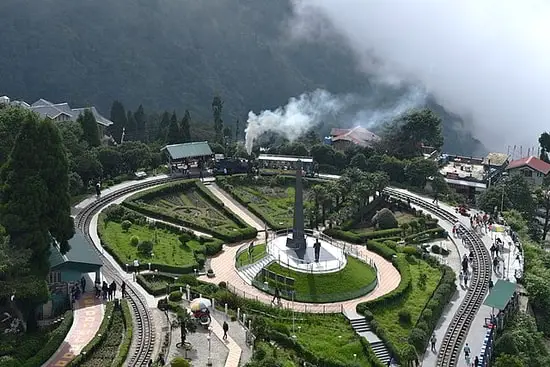
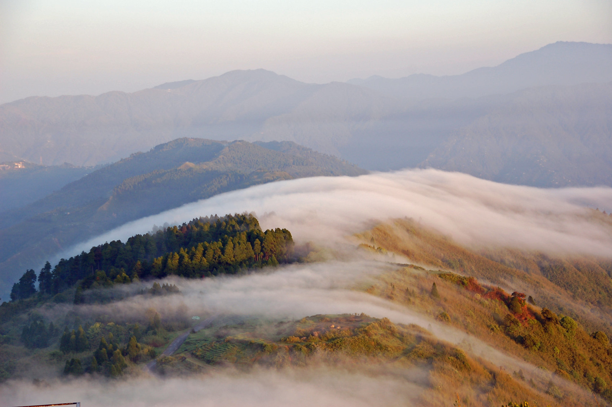
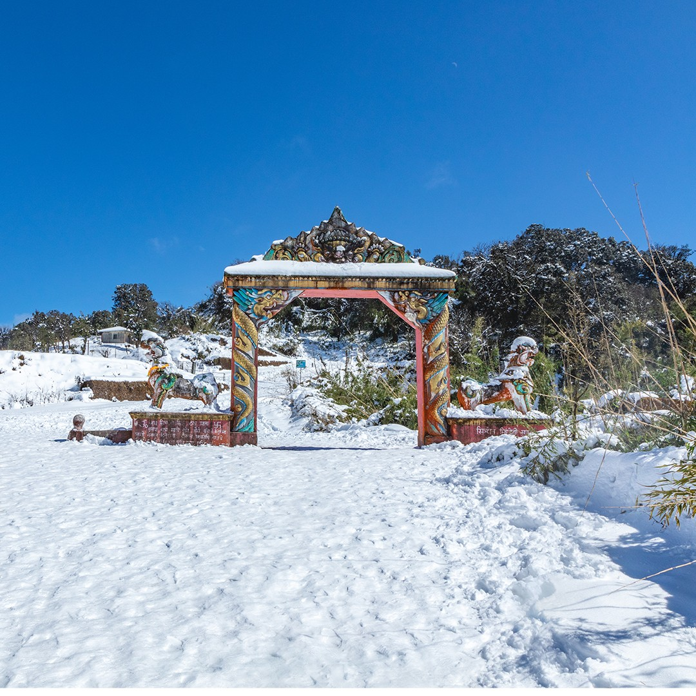
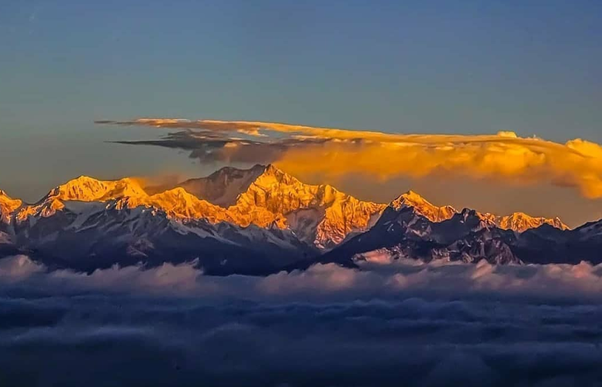
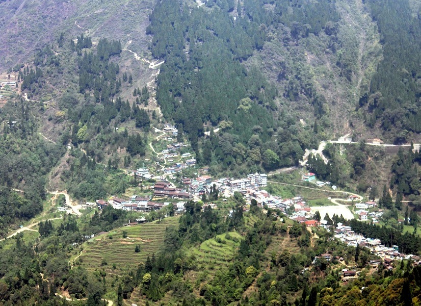
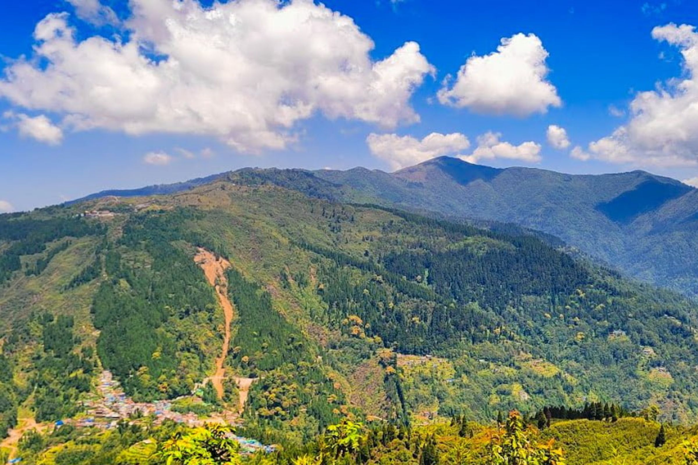

Batasia Loop is a beautiful and scenic railway loop located in Darjeeling, West Bengal. It is famous for its unique spiral railway track, which allows the iconic Darjeeling Himalayan Railway (Toy Train) to navigate the steep slopes. The loop offers breathtaking panoramic views of Darjeeling town and the majestic Kanchenjunga mountain range.
- Toy Train Ride – Experience the world-famous Darjeeling Himalayan Railway as it takes a spiral turn through lush green hills.
- Enjoy a stunning 360-degree view of Darjeeling’s landscape, including snow-capped peaks.
- The loop is surrounded by a beautiful garden filled with vibrant flowers, making it a great spot for photography.
- A tribute to the Gorkha soldiers who sacrificed their lives in wars after India’s independence.
Entry Fee and Timing:
- Timings: Open from 5:00 AM to 8:00 PM
- Entry Fee: ₹50 per person (Toy Train ride costs extra)
How to Reach:
- By Toy Train: You can book a ride from Darjeeling Station to Batasia Loop.
- By Car: It is just 5 km from Darjeeling town, and taxis are easily available.
-


Rock Garden, also known as Barbotey Rock Garden, is a beautiful terraced garden located around 10 km from Darjeeling town. It is famous for its man-made waterfalls, stone pathways, lush greenery, and peaceful surroundings. Nestled amidst the hills, this garden is a perfect place for nature lovers and photography enthusiasts.
- Chunnu Summer Falls – A stunning waterfall cascading through rocky slopes, adding to the beauty of the garden.
- Terraced Garden & Stone Pathways – The garden is built on different levels with stone benches, making it a great place to relax.
- Scenic Views – Surrounded by lush green hills and tea gardens, the garden offers a peaceful retreat from the busy city life.
- Tea & Snacks Stalls – Small tea stalls nearby serve Darjeeling’s famous tea and local snacks.
Best Time to Visit:
The ideal time to visit is March to June and September to November, when the weather is pleasant, and the flowers are in full bloom.
Entry Fee & Timings:
- Timings: Open from 8:00 AM to 6:00 PM
- Entry Fee: ₹10 per person
How to Reach:
- By Car: Rock Garden is 10 km from Darjeeling, and taxis are available from Chowk Bazaar.
- By Shared Jeep: You can also hire a shared vehicle from Darjeeling town.


Tiger Hill is one of the most famous tourist spots in Darjeeling, known for offering a spectacular sunrise view over Mount Kanchenjunga. Located at an altitude of 2,590 meters (8,482 feet), it is the highest point in Darjeeling and provides a breathtaking panoramic view of the Himalayan range, including Mount Everest and Mount Kanchenjunga on a clear day.
- Golden Sunrise Over Kanchenjunga – The main attraction is the first rays of the sun hitting Kanchenjunga, turning the peaks golden-orange.
- View of Mount Everest – On a clear day, you can also spot the world's highest peak, Mount Everest, from Tiger Hill.
- Panoramic Himalayan Views – The hilltop offers a 360-degree view of snow-capped mountains, lush valleys, and tea gardens.
- Serene and Peaceful Atmosphere – Surrounded by pine trees and fresh mountain air, it’s a perfect place for nature lovers.
Best Time to Visit:
- Ideal Months: October to December and March to April for the clearest views.
- Best Time of Day: Early morning (reach before 4:00 AM) to witness the famous sunrise.
- Timings: Open 24/7, but best visited before sunrise (around 4:30 AM – 6:00 AM).
How to Reach:
- By Car: Tiger Hill is 11 km from Darjeeling town, and taxis are easily available.
- By Trekking: Adventure lovers can hike up to Tiger Hill, enjoying the beautiful trails.
-



Simana View Point
Simana Viewpoint is a stunning hilltop viewpoint located on the way from Darjeeling to Mirik. Situated at an altitude of 7,200 feet, it offers breathtaking panoramic views of the Eastern Himalayas, including Mount Kanchenjunga. What makes this place special is that it is right on the India-Nepal border, allowing you to see Nepal’s beautiful valleys without crossing the border!
- Unobstructed Views of Kanchenjunga – Enjoy a spectacular view of the third-highest mountain in the world.
- Overlooking Nepal – On one side, you see Darjeeling’s green hills, and on the other, you can gaze into the plains and valleys of Nepal.
- Perfect Spot for Photography – The mesmerizing landscapes make it a great place for taking pictures.
- Local Tea & Snacks Stalls – Try authentic Darjeeling tea and local snacks while enjoying the view.
- Peaceful & Less Crowded – Unlike other tourist spots, Simana Viewpoint is serene and perfect for relaxation.
Best Time to Visit:
- October to April – The sky is clearer, offering the best views of the Himalayas.
- Early Morning or Late Afternoon – To see the best lighting on the mountains.
Entry Fee & Timings:
- Timings: Open 24/7, but best visited during daylight hours.
- Entry Fee: Free
How to Reach:
- By Car: Simana Viewpoint is 23 km from Darjeeling and 8 km from Mirik. You can hire a taxi from either town.
- By Shared Jeep: Available from Darjeeling and Mirik.
-

